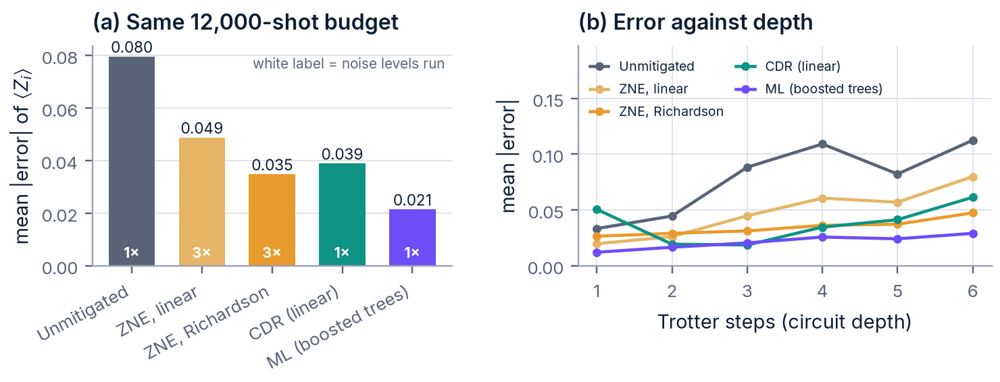

ในบทความนี้
- เลือกจุดแก้ — ก่อนเกิด fault หรือหลังวัดผล
- เจ็ดจุดที่ AI ช่วยได้ — และสิ่งที่ต้องตรวจ
- Mitigation — ลด bias โดยยอมจ่าย variance และข้อมูล
- ลงมือเขียน — correction map ที่ตรวจ training และ test แยกกัน
- อ่าน Lab 3 — ความแม่นยำที่ดีขึ้นมีต้นทุนใดซ่อนอยู่
- ทดลองต่อ — ทำให้สมมติฐานเสีย แล้ววัดใหม่
- Run & check — รันตัวอย่างด้วยตัวเอง
- Sources & scope — แหล่งอ้างอิงและขอบเขต
In this post
- Choose the intervention: before the fault or after readout
- Seven insertion points and the check each one needs
- Mitigation: reduce bias while paying for variance and data
- Write a correction map with separate training and scoring
- Read Lab 3: what the accuracy gain costs
- Your experiment: break the assumption and measure again
- Run and check the example
- Sources and scope
เลือกจุดแก้ — ก่อนเกิด fault หรือหลังวัดผล
ดาวน์โหลดหนังสือและโค้ดประกอบ
ดาวน์โหลด Below Threshold ฉบับเต็ม (PDF ภาษาอังกฤษ · 104 หน้า · 5.4 MB)
อ่านบน Google Drive · ดาวน์โหลดตัวอย่าง Python ทั้งสิบบท (ZIP)
บทที่ 5/10 · บทเรียนดัดแปลงจาก Below Threshold: AI, Quantum Errors and Better Code ฉบับ 1.0 บทที่ 5 หน้า 30–37
เมื่อ learned decoder ยังมี failure floor เราอาจต้องแก้ปัญหาก่อนข้อมูลเข้า decoder บทนี้อธิบาย Chapter 5 ของหนังสือผ่านคำถามของ engineer: จะปรับ control, เปลี่ยน code หรือปรับ estimator ของผลวัด และจะรู้ได้อย่างไรว่าคุ้มต้นทุน?
พื้นฐานคือค่าเฉลี่ย, variance และ linear regression เราจะสร้าง correction map แบบง่ายด้วย Python โดยไม่ต้องติดตั้ง quantum SDK แล้วอ่านผล Lab 3 ที่เปรียบเทียบ mitigation หลายวิธีบน noise model เดียวกัน เป้าหมายคือแยก bias, sampling error และต้นทุนข้อมูลออกจากกัน
ให้เริ่มจาก output contract หากต้องการรักษา logical state ระหว่างคำนวณ นั่นคือโจทย์ error correction แต่หากต้องการประมาณ observable ของ circuit ให้แม่นขึ้นจาก shots หลายครั้ง นั่นอาจเป็นโจทย์ error mitigation ทั้งคู่ช่วยเรื่อง noise แต่รับประกันผลคนละแบบ
เจ็ดจุดที่ AI ช่วยได้ — และสิ่งที่ต้องตรวจ
หนังสือแบ่ง error path เป็นเจ็ดจุด ตารางนี้แปลให้เป็นงานที่มอบหมายและหลักฐานที่ใช้ตัดสินผล โดยไม่ถือว่าความสำเร็จที่จุดหนึ่งเท่ากับแก้ทั้งระบบแล้ว
| จุดที่ปรับ | สิ่งที่ต้องตรวจ |
|---|---|
| Coding assistant | Specification และ tests ของโปรแกรมที่สร้าง |
| Compilation / synthesis | Equivalence, gates, depth และ compile time |
| Calibration / control | Fidelity และ logical error ขณะเกิด drift |
| Noise learning | Prediction บนข้อมูลใหม่ ไม่ใช่เฉพาะ fit เดิม |
| Code design | Checks, overhead และ circuit-level faults |
| Decoding | Logical failures, throughput และ latency |
| Mitigation | Estimator error, shots และ training cost |
Calibration ปรับ pulse amplitudes, frequencies และ timings ที่ drift ได้ ส่วน code design เปลี่ยน redundancy และ checks ทั้งสองวิธีเปลี่ยนโจทย์ที่ decoder ต้องรับ ไม่ใช่เพียงเปลี่ยนการคาดเดาภายหลัง
Programmer ควรนิยาม metric ก่อนเลือก AI model ตัวอย่างเช่นลด training loss ของ noise model ยังไม่พอ ต้องแสดงว่าความผิดพลาดของ observable หรือ logical operation ที่สนใจลดลงจริงบนข้อมูลที่ไม่ใช้ฝึก
Mitigation — ลด bias โดยยอมจ่าย variance และข้อมูล
ถ้าวัด Pauli observable แต่ละครั้ง ผลเป็น +1 หรือ −1 ค่าเฉลี่ยของ shots ประมาณ expectation value แต่ noise อาจดึงค่าเข้าใกล้ศูนย์หรือเพิ่ม offset การเก็บ shots เพิ่มช่วยลด sampling error แต่ไม่ลบ bias ที่เป็นระบบนี้โดยอัตโนมัติ
Zero-noise extrapolation (ZNE) รัน circuit ที่ noise ถูกขยายหลายระดับแล้ว extrapolate กลับไปที่ศูนย์ เช่นสมมติความสัมพันธ์เชิงเส้น ระดับ 1 และ 3 ให้ estimator 1.5E₁ − 0.5E₃ น้ำหนักที่มากกว่า 1 และติดลบทำให้ variance เพิ่มได้ จึงต้องเทียบด้วย shot budget เท่ากัน
Clifford data regression (CDR) เรียน map จาก noisy values ไปยัง ideal values บน near-Clifford training circuits ที่ยังคำนวณค่าจริงได้ ส่วน ML-QEM อาจใช้ model ร่วมสำหรับหลาย circuits และ observables งานของ Liao และคณะ ศึกษาวิธีนี้และการเรียนเลียนแบบ mitigation ที่แพงกว่าเพื่อให้ runtime ถูกลง
ถ้า target labels มาจาก ZNE โมเดลเรียนให้คล้าย ZNE ไม่ใช่ได้รับคำตอบ ideal เพิ่มมาอย่างอิสระ ต้องระบุที่มาของ labels ทุกครั้ง
ลงมือเขียน — correction map ที่ตรวจ training และ test แยกกัน
กำหนด noise channel สมมติว่า noisy = 0.8 × ideal + 0.05 ใช้ ideal values ห้าค่าเพื่อ fit เส้นตรง แล้ววัด error บนอีกสี่ค่าที่ไม่ปรากฏใน training set ไม่มี shot noise หรือ drift ในส่วนนี้ จึงควรแก้ bias ได้พอดีตามสมมติฐาน ไม่ใช่ความสำเร็จที่คาดหวังจากข้อมูล hardware ทุกชุด
"""Toy affine mitigation: held-out scoring and a transparent shot ledger."""
from math import isclose, sqrt
# Known synthetic noise channel; exact targets are available in this toy only.
noisy = lambda ideal: .8 * ideal + .05
training_ideal = [-1, -.5, 0, .5, 1]
training = [(noisy(x), x) for x in training_ideal]
xbar = sum(x for x, _ in training) / len(training)
ybar = sum(y for _, y in training) / len(training)
slope = sum((x-xbar)*(y-ybar) for x, y in training) / sum(
(x-xbar)**2 for x, _ in training)
intercept = ybar - slope*xbar
held_out = [-.8, -.2, .4, .9]
raw_mae = sum(abs(noisy(x)-x) for x in held_out) / len(held_out)
fixed_mae = sum(abs(slope*noisy(x)+intercept-x)
for x in held_out) / len(held_out)
assert set(held_out).isdisjoint(training_ideal)
assert isclose(slope, 1.25) and isclose(intercept, -.0625)
assert fixed_mae < 1e-12
# Two-point linear ZNE: estimate = 1.5*E(scale=1) - .5*E(scale=3).
# Independent +/-1 outcomes with worst-case variance 1, equal total shots.
shots = 12000
zne_sd_bound = sqrt((1.5**2 + .5**2) / (shots/2))
raw_sd_bound = sqrt(1/shots)
print(f"Learned map: ideal = {slope:.4f}*noisy {intercept:+.4f}")
print(f"Held-out MAE: raw={raw_mae:.4f}, corrected={fixed_mae:.4f}")
print(f"Worst-case SD bounds: raw={raw_sd_bound:.4f}, ZNE={zne_sd_bound:.4f}")
for runs in (10, 1000):
training_shots = 300 * shots
print(f"{runs} later circuits: ML ledger={training_shots+runs*shots:,} shots; "
f"no-training ledger={runs*shots:,} shots")Learned map: ideal = 1.2500*noisy -0.0625
Held-out MAE: raw=0.1150, corrected=0.0000
Worst-case SD bounds: raw=0.0091, ZNE=0.0204
10 later circuits: ML ledger=3,720,000 shots; no-training ledger=120,000 shots
1000 later circuits: ML ledger=15,600,000 shots; no-training ledger=12,000,000 shotsโมเดลเรียน inverse เป็น ideal = 1.25 × noisy − 0.0625 และลด held-out MAE จาก 0.1150 เป็นศูนย์ในขอบเขต floating-point ผลนี้สอนวิธีแยก fit กับ score มากกว่าสาธิต quantum advantage
ส่วน SD bounds ใช้ outcomes ±1 ที่เป็นอิสระและ variance ไม่เกินหนึ่ง เมื่อแบ่ง total shots เท่ากันให้ ZNE สองระดับ bound สูงกว่า raw mean ตัวเลขเป็น upper bounds ภายใต้สมมติฐาน ไม่ใช่ error bars ของ Lab 3 และยังไม่รวม uncertainty ใน correction map ที่เรียนมา
อ่าน Lab 3 — ความแม่นยำที่ดีขึ้นมีต้นทุนใดซ่อนอยู่


Lab 3 ในหนังสือจำลอง 8-qubit Ising Trotter circuits จำนวน 1–6 steps ใช้ depolarizing, relaxation และ readout noise ตามที่กำหนดไว้ ทดสอบ 120 circuits × 8 observables รวม 960 ค่า แต่ละ test circuit ใช้ 12,000 shots เท่ากัน ผลนี้มาจาก output ที่บันทึกในหนังสือ ไม่ใช่ toy rerun ข้างบน
| วิธี | Mean absolute error | Noise levels ต่อ test circuit |
|---|---|---|
| Raw | 0.0796 | 1 |
| Linear ZNE | 0.0488 | 3 |
| Richardson ZNE | 0.0348 | 3 |
| CDR | 0.0389 | 1 |
| Gradient boosting | 0.0214 | 1 |
ML ลด mean error ได้ 3.72 เท่าเทียบกับ raw และดีที่สุดโดยรวม แต่ที่ depth สาม steps CDR ดีกว่าเล็กน้อย CDR ที่ใช้ใน lab เป็น map ร่วมหนึ่งตัว ไม่ใช่ fit แยกต่อ circuit/observable ตาม CDR มาตรฐาน
Training ใช้อีก 300 near-Clifford circuits × 12,000 shots = 3.6 ล้าน shots ทั้ง ML และ CDR จึงใช้ shots รวมมากกว่า ZNE การเปรียบเทียบนี้เท่ากันเฉพาะ runtime และได้ประโยชน์มากขึ้นเมื่อ reuse model หลายครั้งภายใต้ distribution เดิม
ทดลองต่อ — ทำให้สมมติฐานเสีย แล้ววัดใหม่
รัน python3 ch05.py จากนั้นเปลี่ยนเฉพาะ deployment channel ให้ slope เป็น 0.7 โดยคง training channel เดิม ต้องแยก function ฝั่ง training กับ scoring ก่อนเพื่อไม่ให้แก้ทั้งสองพร้อมกัน วัดว่า MAE หลัง correction ยังดีกว่า raw หรือไม่ นี่เป็นการทดลอง drift ที่ระบุสาเหตุได้
Invariant: training และ held-out inputs ต้องไม่ซ้ำกัน และ exact test targets ใช้เพื่อ score เท่านั้น ไม่ใช่เลือก correction coefficients จากนั้นลองเพิ่ม nonlinear term แล้วดูว่า affine model ยังมี bias เหลือเท่าใด
Shot ledger แสดงการเฉลี่ย training cost ไปยังงานในอนาคต แต่ไม่ได้พิสูจน์ว่า ML ใช้ shots น้อยกว่า baseline ในตัวอย่าง เพราะทั้งคู่มี runtime shots เท่ากัน จึงยังมี training overhead เพิ่มเสมอ หากจะอ้างประหยัดทรัพยากร ต้องกำหนด accuracy target แล้ววัดจำนวน shots ที่แต่ละวิธีต้องใช้เพื่อไปถึงเป้านั้น
Mitigation ช่วยประมาณ observable ไม่ได้สร้าง protected logical state และไม่ใช่สิ่งแทน error correction ในการขยายระบบ
Run & check — รันตัวอย่างด้วยตัวเอง
ตัวอย่างสำหรับสอนนี้ใช้ Python standard library เท่านั้น บันทึก ch05.py แล้วรันด้วย Python 3.10 ขึ้นไป โดย assertions ตรวจ invariant ที่อธิบายในบท
python3 ch05.pyตัวอย่างทั้งสิบบทและผลลัพธ์ที่คาดหวัง (ZIP) · อ่าน source บน GitHub
Sources & scope — แหล่งอ้างอิงและขอบเขต
เอกสารและหลักฐาน
โครงบท ภาพที่ให้เครดิต และผล lab ที่รายงานมาจากหนังสือของผู้เขียน ณ November 2026 ตัวอย่างสั้นที่ใช้ standard library รันเพื่อตรวจบทเรียนเว็บวันที่ 25 November 2026 เป็นแบบจำลองเพื่อสอน ไม่ได้รันซ้ำการทดลอง Stim, neural network, mitigation หรือ LLM ฉบับเต็มในหนังสือ ข้ออ้าง hardware, simulator, preprint และบริษัทคงขอบเขตตามที่ระบุ
- Anirach Mingkhwan. Below Threshold: AI, Quantum Errors and Better Code. Edition 1.0 (November 2026), Chapter 5, pp. 30–37.
- Liao et al. Machine learning for practical quantum error mitigation. Nature Machine Intelligence (2024).
- Temme, Bravyi and Gambetta. Error mitigation for short-depth quantum circuits. Physical Review Letters (2017).
- Czarnik et al. Error mitigation with Clifford quantum-circuit data. Quantum (2021).
Choose the intervention: before the fault or after readout
Download the book and examples
Download the complete Below Threshold book (English PDF · 104 pages · 5.4 MB)
Read on Google Drive · Download all ten Python examples (ZIP)
Chapter 5/10. A tutorial adaptation of Below Threshold: AI, Quantum Errors and Better Code, Edition 1.0, Chapter 5, pp. 30–37.
When a decoder reaches an information floor, improving the network may be the wrong intervention. Chapter 5 asks where to act earlier: tune the controls, redesign the code, or improve the estimator built from noisy measurements. For an engineer, the next question is whether the accuracy improvement justifies its data and runtime cost.
You need averages, variance and elementary linear regression. We will build a correction map with standard-library Python, then interpret the book’s Lab 3 comparison under a specified noise model. The aim is to separate bias, sampling error and the cost of obtaining training data.
Start from the output contract. Preserving an evolving logical state is an error-correction task. Estimating a circuit observable more accurately from many executions can be an error-mitigation task. Both address noise, but they provide different kinds of protection.
Seven insertion points and the check each one needs
The book identifies seven insertion points. Translate each into a delegated task and a measurable acceptance check, rather than treating a successful component as evidence that the whole machine is repaired.
| Intervention | Acceptance evidence |
|---|---|
| Coding assistant | Specification and tests for generated code |
| Compilation / synthesis | Equivalence, gates, depth and compile time |
| Calibration / control | Fidelity and logical errors under drift |
| Noise learning | Predictions on fresh observations |
| Code design | Checks, overhead and circuit-level faults |
| Decoding | Logical failures, throughput and latency |
| Mitigation | Estimator error, shots and training cost |
Calibration changes pulse amplitudes, frequencies and timing as a device drifts. Code design changes redundancy and the checks available to reveal faults. Both modify the problem presented to the decoder, rather than merely changing its later guess.
Define the metric before choosing a learning architecture. A lower noise-model training loss is insufficient: show that the observable or logical operation you care about improves on data withheld from fitting.
Mitigation: reduce bias while paying for variance and data
A Pauli measurement produces +1 or −1. Averaging shots estimates its expectation value, but noise can shrink the value toward zero or introduce an offset. More shots reduce sampling error; they do not automatically remove that systematic bias.
Zero-noise extrapolation (ZNE) executes circuits at amplified noise levels and extrapolates to zero noise. Under a linear model, measurements at scales 1 and 3 give the estimator 1.5E₁ − 0.5E₃. The large and negative weights can amplify variance. Compare methods at an equal shot budget, rather than giving each extra circuit an uncounted allocation.
Clifford data regression (CDR) learns a map from noisy to ideal values on near-Clifford training circuits whose targets can be computed classically. ML-QEM can share a learned model across circuits and observables. Liao and colleagues study such models and learning to imitate a more costly mitigation procedure with less runtime overhead.
If ZNE supplies the labels, the learned target is ZNE, not independent access to the ideal answer. Always disclose where target values came from.
Write a correction map with separate training and scoring
Assume a synthetic channel noisy = 0.8 × ideal + 0.05. Fit an affine inverse on five known target values, then score four different values absent from training. This part includes no shot noise or drift, so the affine correction should exactly remove the assumed bias. That is a model property, not an accuracy promise for hardware.
"""Toy affine mitigation: held-out scoring and a transparent shot ledger."""
from math import isclose, sqrt
# Known synthetic noise channel; exact targets are available in this toy only.
noisy = lambda ideal: .8 * ideal + .05
training_ideal = [-1, -.5, 0, .5, 1]
training = [(noisy(x), x) for x in training_ideal]
xbar = sum(x for x, _ in training) / len(training)
ybar = sum(y for _, y in training) / len(training)
slope = sum((x-xbar)*(y-ybar) for x, y in training) / sum(
(x-xbar)**2 for x, _ in training)
intercept = ybar - slope*xbar
held_out = [-.8, -.2, .4, .9]
raw_mae = sum(abs(noisy(x)-x) for x in held_out) / len(held_out)
fixed_mae = sum(abs(slope*noisy(x)+intercept-x)
for x in held_out) / len(held_out)
assert set(held_out).isdisjoint(training_ideal)
assert isclose(slope, 1.25) and isclose(intercept, -.0625)
assert fixed_mae < 1e-12
# Two-point linear ZNE: estimate = 1.5*E(scale=1) - .5*E(scale=3).
# Independent +/-1 outcomes with worst-case variance 1, equal total shots.
shots = 12000
zne_sd_bound = sqrt((1.5**2 + .5**2) / (shots/2))
raw_sd_bound = sqrt(1/shots)
print(f"Learned map: ideal = {slope:.4f}*noisy {intercept:+.4f}")
print(f"Held-out MAE: raw={raw_mae:.4f}, corrected={fixed_mae:.4f}")
print(f"Worst-case SD bounds: raw={raw_sd_bound:.4f}, ZNE={zne_sd_bound:.4f}")
for runs in (10, 1000):
training_shots = 300 * shots
print(f"{runs} later circuits: ML ledger={training_shots+runs*shots:,} shots; "
f"no-training ledger={runs*shots:,} shots")Learned map: ideal = 1.2500*noisy -0.0625
Held-out MAE: raw=0.1150, corrected=0.0000
Worst-case SD bounds: raw=0.0091, ZNE=0.0204
10 later circuits: ML ledger=3,720,000 shots; no-training ledger=120,000 shots
1000 later circuits: ML ledger=15,600,000 shots; no-training ledger=12,000,000 shotsThe fit learns ideal = 1.25 × noisy − 0.0625 and reduces held-out MAE from 0.1150 to floating-point zero. It demonstrates the separation between fitting and scoring, rather than quantum advantage.
The standard-deviation bounds assume independent ±1 outcomes with variance at most one. Splitting a fixed shot budget between the two ZNE noise scales yields a larger bound than the raw mean. These are model-based upper bounds, not Lab 3 error bars. They also exclude uncertainty in the fitted correction map.
Read Lab 3: what the accuracy gain costs
The book’s Lab 3 simulates eight-qubit Ising Trotter circuits at one to six steps, with specified depolarizing, relaxation and readout noise. It scores 120 circuits × eight observables, or 960 values, using 12,000 shots per test circuit for every method. The following comes from the book’s captured output, not the toy rerun above.
| Estimator | Mean absolute error | Test noise levels |
|---|---|---|
| Raw | 0.0796 | 1 |
| Linear ZNE | 0.0488 | 3 |
| Richardson ZNE | 0.0348 | 3 |
| CDR | 0.0389 | 1 |
| Gradient boosting | 0.0214 | 1 |
ML reduces mean error 3.72-fold relative to raw results and wins overall. CDR is slightly better at three steps. The lab’s CDR uses one shared linear map; standard CDR instead fits a circuit and observable separately.
Training adds 300 near-Clifford circuits × 12,000 shots, or 3.6 million shots, for the learned methods. Their total shot usage therefore exceeds ZNE here. The comparison is equal at runtime, with reuse across later circuits needed to amortize training.
Your experiment: break the assumption and measure again
Run python3 ch05.py, then change only the deployment channel’s slope to 0.7 while retaining the training channel. First split the shared function into training and scoring functions, so that you do not accidentally change both. Does correction still beat the raw MAE? This is a controlled drift experiment with a known cause.
Preserve disjoint training and held-out inputs. Use exact test targets only for scoring, never to select correction coefficients. Next add a nonlinear term and measure the residual bias an affine model cannot express.
The shot ledger amortizes training across future work; it does not prove fewer total shots here. Both alternatives use equal runtime shots, so learning retains extra training overhead. To claim resource savings, fix an accuracy target and measure the shots each method needs to reach it.
Mitigation improves an observable estimate. It does not create a protected logical state or replace error correction as the system scales.
Run and check the example
This complete teaching example uses only the Python standard library. Save ch05.py, then run it with Python 3.10 or later. Its assertions check the stated invariants.
python3 ch05.pyAll ten examples and expected output (ZIP) · Browse example source on GitHub
Sources and scope
Reading and evidence
The author’s book is the source of the chapter structure, credited diagrams and reported lab results (November 2026 snapshot). The short standard-library example above was executed for this web lesson on 25 November 2026. It is a teaching model; the book’s full Stim, neural-network, mitigation and LLM experiments were not rerun for these posts. Hardware, simulator, preprint and company claims retain their stated scope.
- Anirach Mingkhwan. Below Threshold: AI, Quantum Errors and Better Code. Edition 1.0 (November 2026), Chapter 5, pp. 30–37.
- Liao et al. Machine learning for practical quantum error mitigation. Nature Machine Intelligence (2024).
- Temme, Bravyi and Gambetta. Error mitigation for short-depth quantum circuits. Physical Review Letters (2017).
- Czarnik et al. Error mitigation with Clifford quantum-circuit data. Quantum (2021).